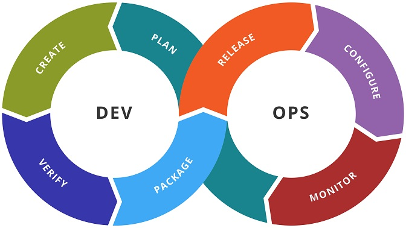

---------TOPICS TO TALK ABOUT--------
The Advanced Networking Technologies course examines the design, deployment, and management of modern network architectures. |
| DevOps is a way of approaching culture, automation, and platform design to deliver greater business value and responsiveness through agile delivery of high-quality services. All this is possible thanks to the provision of fast and constant IT services. |
*FUNDACIÓN UNIVERSITARIA LOS LIBERTADORES
|
 |